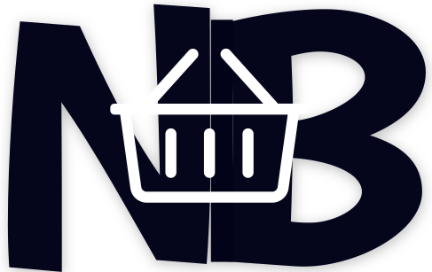

<div fxLayout="column" class="container">

  <div fxlayout fxLayout="row" fxLayoutGap="32px">
    <div class="img-container">
        
    </div>

    <div class="">
      <h3>The NodeBucket Mission</h3>

      <p>NodeBucket got it's humble start by a simple observation: <strong>Dads can't remember things.</strong></p>

      <p>We understand this is a ver general statement, however, it proved to be a common problem in most family households. We at NodeBucket sought out to improve the quality of life for families in which Dad can't remember what they were supposed to pickup from the store. We needed to all those those kids that are left at school for an extra 30 minutes because their dad forgot they were supposed to pick them up. The list goes on. </p>

      <p>The solution was simple as we know Dad's have the best intentions despite their lack of memory. They want to do right by their families, they just needed a little help remembering things and carrying a notebook around with them wasn't  going to do the trick. They needed a app that can be accessed anywhere that has provides them with two important things...</p>

      <ul>
        <li><mat-icon>done</mat-icon> What they need to do</li>
        <li><mat-icon>done</mat-icon> What they have completed</li>
      </ul>

      <p>It's simple, its easy, and it get's the job done. This product doesn't stop with Dads though. Anyone can use it! Improve your life, both personally and professionally with this handy app. Never forget to pick up milk on the way home. Get the kids where they need to be... and do it on time! Does your boss hand you a last minute task just as you are heading out of the office? With NodeBucket you can pull out your phone and document it right there on the spot.</p>

      <p>Get ready for a better life!</p>
    </div>
  </div>

</div>
